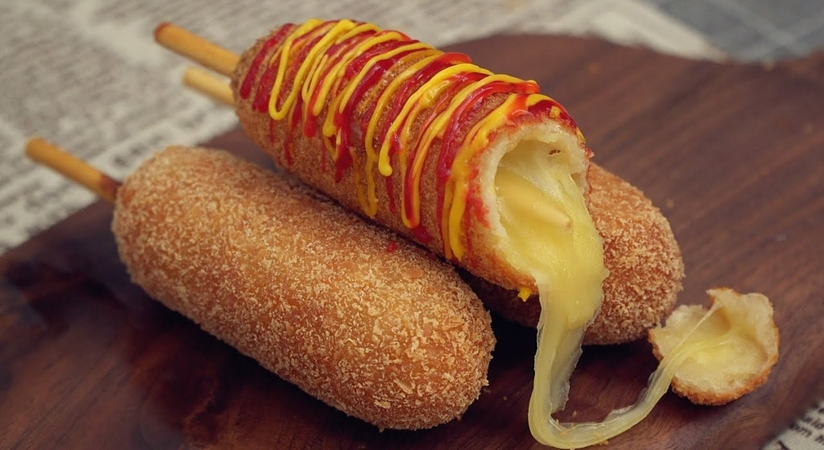

Corn dogs recipe

Description
A corn dog (also spelled corndog) is a sausage (usually a hot dog) on a stick that has been
coated in a thick layer of cornmeal batter and deep fried. It originated in the United States
and is commonly found in American cuisine.
Corn dogs are often served as street food or as fast food. For the best and freshest preparation,
some vendors or restaurateurs dip and fry their corn dogs just before serving.
Some corn dog purveyors sell pre-made frozen corn dogs, which have been thawed and then fried again or browned in an oven.
Corn dogs can also be found at almost any supermarket and convenience store store in North
America as frozen foods as well as served hot and ready to eat. Pre-made frozen corn dogs can also be
heated in a microwave oven, but the cornbread coating will lack texture.
Ingredients
For the Batter
- 1 cup & 2 tbsp all purpose flour plus more for dusting
- 2 tsp baking powder
- 1/2 tsp salt
- 2 tbsp sugar
- 1 egg
- 3/4 cup cold milk
For the Corn Dogs
- Sausages
- 1 cup panko bread crumbs
- Frying oil
- 1/3 cup sugar
- Spicy ketchup (half ketchup & half sriracha)
- Honey mustard
Steps
- In a mixing bowl, whisk flour, baking powder, salt, and sugar.
- Make a little well in the middle and add egg and milk. Mix everything together until smooth.
Pour batter into a long glass and keep it in a fridge until ready to use.
- Keeping the batter cold.
- Skewer sausage sticks into bamboo or wooden skewers. Dust with flour and place in a freezer for at least 5 minutes to 10 minutes.
- Heat frying oil to 350°F (177°C)
- Dip and coat skewered sausage sticks with the cold batter. Make sure to cover all around.
Then lightly and quickly coat with panko bread crumbs then carefully place into frying oil.
- Fry for 5 minutes or until golden brown out side. Remove form oil, place on a cooling rack or paper towel lined baking sheet.
- Spread sugar on a small baking sheet or a large plate. Roll cheese corn dogs on sugar to evenly coat while it’s still hot.
- Pour the spicy ketchup (half ketchup & half sriracha) and honey mustard over the corn dog